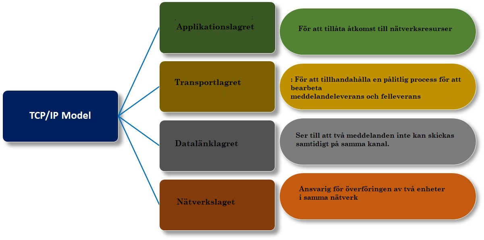

HTTP är ett Hypertext Transfer Protocol.
HTTP är ett protokoll som hämtar resurser som HTML-dokument. Det används för att utbyta data på webben och är ett klient-serverprotokoll vilket innebär att förfrågningar initieras av mottagaren,
vanligtvis webbläsaren. HTTP ger användarna ett sätt att interagera genom att distribuera hypertextmeddelanden mellan servrar och klienter. HTTP använder olika uppgifter som ska utföras av begäransmetoder som är anlitade enligt nedan:
TCP är ett anslutningsorienterat protokoll som anger att en anslutning upprättas och bibehålls tills applikationsdata i varje ände har avslutat utbytet. TCP delar upp programdata i paket. Detta paket levereras till transportlagret. Lager 4 hanterar flödeskontroll och tillhandahåller felfri dataöverföring och hanterar återsändning av tappade eller förvanskade paket och kvitterar alla paket som anländer. I OSI-modellen täcker TCP delar av lager 4 transportlagret och lager 5 täcker sessionslagret.
TCP:s jobb är att se till att all data som skickas i en ström flyttas från klient till server i rätt ordning och är intakt. TCP använder en teknik som kallas positiv bekräftelse med återsändning, vilket kräver att den mottagande delen av en sändning ger ett svar på vilken data som har tagits emot. Byten som skickas kan exakt matcha de mottagna byten. Inga data ändras eller går förlorade på vägen. Anslutning upprättas och ett 3-vägs handslag görs. Först skickar källan ett SYN-begäranpaket till servern för att starta sessionsetableringsprocessen. Sedan skickar servern ett SYN-ACK-paket för att acceptera processen. Slutligen skickar källan ett ACK-paket till målet för att bekräfta processen, varefter data kan skickas.
Internetprotokollet (IP) är ett protokoll, eller en uppsättning regler, för att dirigera och adressera datapaket så att de kan resa över nätverk och komma fram till rätt destination. Data som passerar internetet delas upp i mindre bitar, så kallade paket. IP-information bifogar varje paket, och denna information hjälper routrar att skicka paket till rätt plats. Varje enhet eller domän som ansluter till Internetet tilldelas en IP-adress, och när paket dirigeras till den IP-adress som är kopplad till dem kommer data dit där det behövs.
